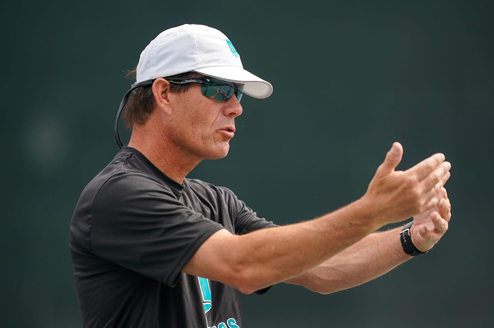

Current chapter · to confirm
Club & private coaching
The report describes work at Burlingame Country Club and private coaching across the Peninsula and South Bay.
Confirm current affiliation, dates, and court access.
Why Scott
An individual approach to technique, strategy, and the way you learn.

The approach
Scott combines technique, match strategy, and individualized feedback to help players improve with purpose.
The starting point is your game: what feels reliable, what breaks down, and what you want to do next. Lessons connect focused practice with decisions you can use on court.
To confirm This is proposed coaching-philosophy copy for Scott to review.
Experience, in context
A selective timeline will connect Scott’s experience with what it means for his players.
The report describes work at Burlingame Country Club and private coaching across the Peninsula and South Bay.
Confirm current affiliation, dates, and court access.
Mission College, Stanford, Holy Names, and Stonebrae appear in the source material. A final timeline will highlight the most relevant roles and outcomes.
Confirm roles and dates before publication.
Coaching history includes USF, Texas–Pan American, and Pacific, according to the report.
Historical collegiate coaching source ↗Competition and ranking history add another perspective to match preparation.
2016 USTA rankings (PDF) ↗Your next step
Share your goals, level, and availability. We’ll find the right place to start.